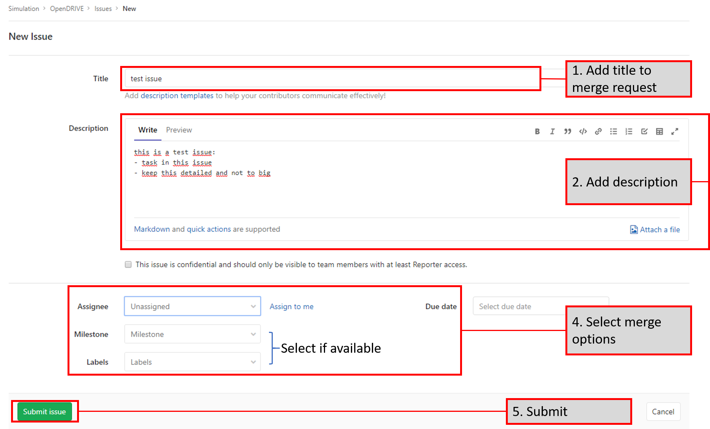
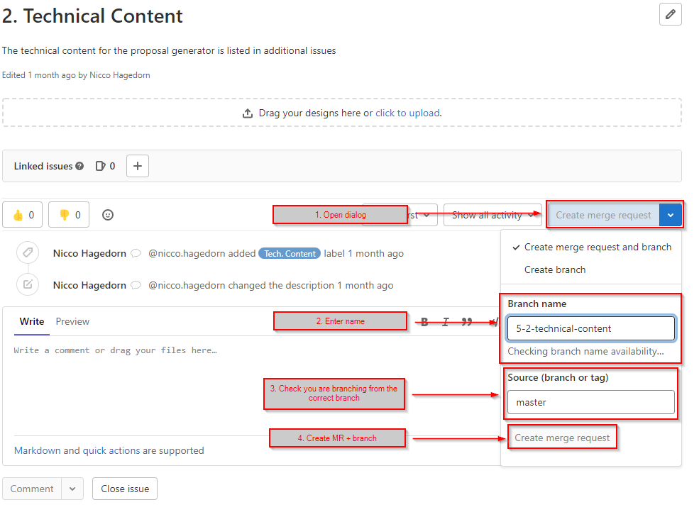
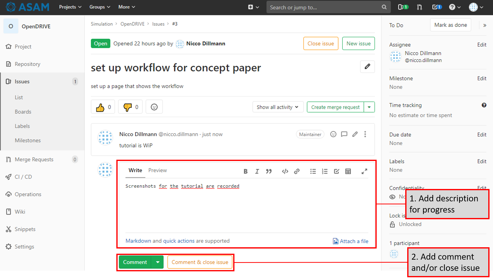
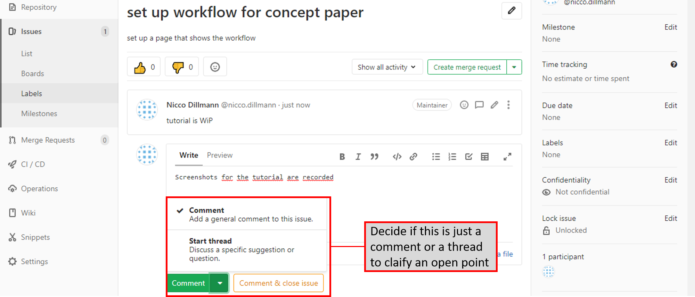

Guides For Remote Repositories

-
Participate with issues
-
The trunk strategy
-
Creating a branch
-
Branch naming
-
option: forking
-
merge requests and reviews
-
accessing artifacts
Contributing Through Issues
| If you want to contribute more directly, see Contributing In AsciiDoc Files. |
Make Discussions Accessible
It must be possible for every project member to contribute to and give feedback on the content of a Proposal document directly. For this purpose, all content discussions shall happen through issues in a project’s issue board.
Gather Topics In Issues
If your project is on ASAM GitLab, see the GitLab instructions for creating issues.
If your project is on GitHub, see the GitHub instructions for creating issues.
- PROPOSAL
-
Participants shall gather content for sections in issues in the proposal repository and discuss them there.
If the Proposal is for an update of an existing ASAM standard, consider collecting and using backlog issues from the previous project first.
- DEVELOPMENT
-
Every topic shall have its own issue.
Issue Naming
- PROPOSAL
-
The name of the issue shall correspond to the respective section.
- DEVELOPMENT
-
The name of the issue shall follow the Branch Naming Conventions.
Use Issue Templates
Issues shall be created using the provided issue templates in the repository.
| Each issue template contains a description (as comments) on when to use them and what content to add where. |

Label Issues Correctly
If your project is on ASAM GitLab, see the GitLab instructions for assigning labels.
If your project is on GitHub, see the GitHub instructions for assigning labels.
The use of issue labels is required for filtering and sorting issues more efficiently.
Every project must follow the provided list of issue labels.
If a project wants to use additional custom labels for extra filter options, it may do so as long as each label is documented in the project documentation an accessible to each project member.
Each issue shall be labeled according to the appropriate project labeling schema.
For project proposals, all issues related to the proposal shall be labeled Proposal.
This helps with separating issues from the proposal phase later when transferring content to the standardization repository.
Issue Discussions
Content
The issue content (body) contains the definition of the issue.
In the case of a feature or chapter description, it contains the current content of that chapter.
It shall always be up-to-date and contain the latest discussed and approved version.
In the case of a question or a bug, it contains the initial topic.
In the latter case, the content shall only be updated to correct mistakes therein.
Comments
If your project is on ASAM GitLab, see the GitLab instructions for commenting.
If your project is on GitHub, see the GitHub instructions for communication on issues.
A comment to an issue is a new topic that is independent from any previous comment.
| Before you add a new comment to an issue, make sure it is not a duplicate (i.e. the same or a similar comment already exists) and that it is not supposed to be a reply! Failure to do so will prevent efficient project progress. |
Replies
If your project is on ASAM GitLab, see the GitLab instructions for replies (aka "starting a thread").
If your project is on GitHub, see the GitHub instructions for communication on issues.
A reply is a comment created as a reply to a previous comment. In the issue, it is a child comment to the previous one and listed in relation to it.
If you want to reply to a previous comment, make sure to create a reply, not a new comment!
Closing Issues
An issues shall be closed once its discussion is resolved. Possible reasons:
-
The questions of the issue have been answered
-
The bug has been fixed and the fixes have been reviewed and merged
-
The feature has been developed, reviewed, and merged
It is best practice to close an issue immediately after one of the closing conditions has been met.
Additionally, an issue may also be closed without resolution if
-
it has become obsolete
-
it is a duplicate (i.e. another issue deals with the same topic already)
-
it has not been worked on for a long period of time (see The Issue Triage)
The Issue Triage
ASAM has defined a process for closing outdated issues.
This is called the "Issue Triage" or "Ticket Triage".
See Issue triage - managing unedited issues for more details.
Trunk Workflow For Remote Repositories
| Never work on the master branch, always create your own development branch! |
The Trunk
This branch can only be merged to by the ASAM office or the project’s Change Control Board (CCB). Unless indicated by a clear git tag, all commits are considered to be part of a release candidate.
Users MAY branch off the trunk for more focused development work. These branches SHOULD be short-lived (<2 weeks) and regularly merged back. These branches MAY be squashed and MUST be merged via fast-forward merge (enabled by default).
Workflow Overview
Initial setup
Who: WG Leads
-
Create issues that map to the features in the project list
-
Assign the issues to the correct milestone:
/milestone <milestone> -
Assign the issues to a responsible:
/assign @<user>
Analysis
Who: Issue Assignee
-
Coordinate & drive the preparation of a proposal for addressing the issue. Either via comments or in further meetings.
-
/label ~Analysisto indicate this issue is being looked at and discussed.
Implementation
Who: Issue Assignee
-
Once a proposal is ready to be implemented, begin submitting work via commits to the develop branch
-
[OPTIONAL] An assignee MAY create a separate branch off of develop to make it easier to keep development separate. Such a branch SHOULD be short-lived (no more than 2 weeks) to ensure progress and direction are visible to project members and that it is not too out of sync with other activities.
-
Change the issue status
/label ~Implementationto indicate that a proposal is being implemented for this issue
Review
Who: WG Lead
-
Review implementation progress of issue in WG meetings
-
Once the group agrees that the feature is complete:
-
[PREREQUISITE] If a feature branch was created, it MUST have been merged to develop
-
Change the issue status
/label ~ProjectReview -
Create a new branch from develop
-
Remove the encapsulating draft feature flag from the content (make sure that all other content remains within the draft flag) and commit the change.
-
Open a MR to develop, add a comment to request review by the whole project and the implementers forum:
/request_review @all. The MR MUST include document subsection number(s) being reviewed and a link to the lines of source code to be reviewed.
-
Who: All project members & Implementers Forum
-
Submit feedback on the changes directly in the MR
-
General Feedback: Submit a comment on the MR
-
Content specific: Start a review in the changes tab of the MR
To start a review, write a comment on a diff as normal under the Changes tab in a merge request, and then select Start a review. Click here for more information. -
If the review feedback requires further development work, the process restarts from the [IMPLEMENTATION] stage
-

Who: CCB
-
If there are no unresolved comments or threads after two weeks the CCB ends the review.
-
The MR is assigned to the service provider for integration
-
/assign @amuetsch
-
Integration
-
The service provider (SP) refines the content in the MR:
-
Change status to
/label ~Integration-
The content is adjusted to adhere to ASAM style and writing conventions
-
General editorial rewrites to ensure homogeneity of content
-
Questions on content should be addressed to the original issue assignee who will be responsible for ensuring a satisfactory resolution. In the case that questions lead to significant changes to the content, the MR is reopened for review on resolution. -
On completion of the integration:
-
Create a 2nd MR from the review branch to release (same MR title)
-
Add
/label ~CCBReviewto both MRs -
Both MRs MUST be set to squash commits with fast-forward merging (default).
-
Squash commit message MUST adhere to the commit conventions
-
-
Create Development Branch
Each topic must be developed in a separate development branch before it is merged to main when ready. Please keep in mind to change only few files at once in one branch to minimize the chance for merge conflicts to occur.
| Give the branch a significant name that describes its intensions. See Branch Naming Conventions for branch name conventions at ASAM. |
If you want to switch the branch you are viewing and working on, see compendium:guides/how-to__switch_branches.adoc.
Create Branch From Issue
The recommended way of working is by using issues.
The general idea is: Whenever an issue is opened, a branch is created with it.
Thus, it is possible to work on the issue in an individual branch and merge that branch back to main after the issue is done.
-
Create an issue, using one of the available templates.

-
Fill out the neccessary fields. Keep the size of the issue reasonable, for example by trying to have it cover about 8 hours of work.
 -
Open your issue and create your branch from it. Follow the Branch Naming Conventions for the branch name.
 -
Now, the ticket is created and we can start working on the issue. When working on the issue, document your progress to be able to know when the task is done. Please keep the documentation for the progress short and simple.
 -
If there are open points that need to be discussed with the group, start a new thread in the issue so others can reply to your suggestion or question
A thread in an issue looks like the image below.

-
As soon as the issue is done, create a merge request for the branch to start an internal review.
Create Development Branch Manually
Alternatively, you can create your branch manually, either through GitLab or locally (if set up).
There a many ways to create a branch in the git process. Two options are highlighted below.
Option 1: Using Visual Studio Code

-
Click on the branch icon on the bottom left
-
Click on "Create New Branch"
-
Enter a new valid branch name and confirm with Enter
You are automatically switched to the new branch.
|
This is a local branch. You need to push it before it is also on the remote. |
Option 2: In GitLab

-
Open an issue for which you want to create a new branch
-
Select "Create branch" from the dropdown menu
 Figure 7. create name for new branch
Figure 7. create name for new branch -
Enter a new valid branch name
-
Click "Create branch"
The branch is now created on remote.
|
You need to check out this branch locally as this only creates the branch on the server. |
Work In Development Branch
| If you are using the Gitlab IDE, you can edit the files directly in your browser. |
If you are using a local setup, you can pull, change, stage, commit and push through Git. See the guide on Git interactions for further information on how to work with a repository.
Commits Conventions
The Commit Message Convention can be found here.
Mark Content As Draft
If a file contains content that is merged although not completely ready yet, use the feature flag 'draft' to mark the section or instructions in draft mode.
This allows us to have both a draft document and a reviewed document from the same source through just adding or removing the draft attribute in the build pipeline.
To convert content to reviewed (i.e. non draft) content, the encapsulating ifdef statement simply needs to be removed (everything that is not in the square brackets).
These flags SHOULD only be modified by WG Leads, the CCB or the ASAM office.
You shall not pass!
Create Merge Request
After you are done with your work, create a "merge request" (or "pull request").
You should always merge back into the branch you branched from: if you branched from the main branch, you merge back to it.
If you branched from another feature branch, you merge back to that feature branch.
This is described in Merge a branch.
It is recommended to only merge a development branch once all issues related to it are closed.
Each merge request must be reviewed internally with a simple review before it is allowed to be merged into main in order to minimize mistakes slipping through.
Once a branch is merged into main, its changes are now offical and applied.
Forking from repository
Creating a fork "clones" the repository into your profile, allowing you to make changes without having to interact with the main repository.
| The procedure is the same on code.asam.net (gitlab) and on github. |
Forking step-by-Step

-
Select "Fork" from the top of the repository page
-
Select yourself from the list of users
-
Wait for the forking process to finish
Once you see your name in the url of the repository, the forking is complete.
Creating A Pull Request From A Fork
To submit the changes you make in your fork back to the original repository, submit a Merge/Pull request as normal in the main repository, making sure to select your fork.

-
Access the original repository
-
Click on "Pull requests"
-
Click on "New pull request"
-
Click "compare across forks"
-
Select your fork from the list
-
Click on "Create pull request"
Merge requests
Merge commit strategy
-
History of commits in a PR must be clean prior to merge
-
Commit messages to a protected or master branch must adhere to conventional commits specification
Repositories allow fast-forward merges only (--ff-only) and squash commits by default.
This means we do not have a merge commit and that all commits are squashed.
For squash commits with one commit, the commit message is taken directly (squash does not take place). For actual squashes the commit messages are taken from:
-
The first multi-line commit message in the merge.
-
The merge request’s title if no multi-line commit message is found.
Squash commits is enabled by default but can be turned off, we do not always want to squash. This is to make sure that for those times that people create multiple unrelated changes in one branch we can still add them to the history.
Merge/Pull Request Review
-
Pull/Merge request opened
-
Technical discussion in comments
-
-
Initial review by CCB, includes technical alignment with other activities in and outside of the project
-
When a PR is ready for a review the CCB assigns it to a reviewer(s)
-
This could be a group in an ASAM project, an expert in the CCB or a participating service provider (e.g. for editorial review)
-
On approval by the reviewers the PR/MR is assigned the ~ReadyForCCBReview label
-
-
Final review & merge by CCB - includes ensuring clear commit history that adheres to ASAM commit guidelines
-
Discussion highlights and final decisions need to be documented in PRs/issues
-
If necessary, further participants will be invited to CCB for more discussion (e.g. if a decision is needed on a PR or issue)
-
| Discussion and feedback takes place via comments in the PR |
Change management
-
Auto-generated changelog included in release based on correctly formatted commits
-
Manual summary included in spec - overview of important changes in the new version
Milestone management
-
For now - milestones as defined in the proposal roadmap - this might be subject to change as the project develops
-
PRs to be assigned to a milestone by PR creator
-
CCB to review the milestone assignment
-
This must relate the change type (breaking change, backwards compatible, bug) to the release types (major/minor/maintenance)
-
For now, we will work with one master. Should we have many PRs targeting a future release we might implement multiple "development" branches for the different versions. (Only when necessary)